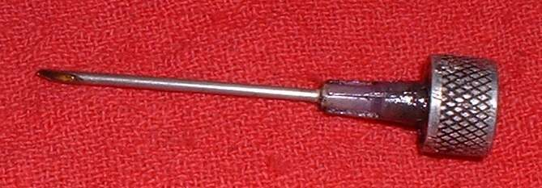

Most wheel bearings are sealed and made to last a long time. Replacement is the better answer for any bearing with play, roughness or heat damage. Regreasing is an option for a bearing that is dry but still smooth, or for an open or tapered roller bearing that has no seals.
Safety
- Do not regrease and ride on a bearing with play or notchy rotation. Replace it. A bearing that fails at speed can lock the wheel.
- Degreaser is flammable. Keep it away from sparks and heat.
- Keep grease off the brake disc, pads and drum.
Decide
- Open ball bearing or tapered roller bearing: can be cleaned and repacked.
- Rubber seal: the seal can often be lifted with a thin screwdriver without damage. Clean, repack and refit.
- Steel shield: very hard to open without bending it. A bent shield will not refit. Replace the bearing.
- Any bearing with play, roughness, blue heat marks or damage: replace it. See Replace wheel bearings.
Steps
- Remove the wheel (front, rear).
- Take out the bearing as in the wheel bearing page. Tapered roller bearings come out as a cone and cup and can be cleaned.
- Lift the rubber seal carefully with a thin screwdriver. Wash the bearing in degreaser and let it dry.
- Turn the clean bearing by hand. It should be smooth and quiet. If it is rough, replace it.
- Work fresh grease into the rolling parts until they are well coated.
- Refit the seal or shield with the side marked as outer facing out. Fit new hub seals.
- A needle nozzle on a grease gun can push grease through a rubber seal without removing it. The rubber closes over the hole when the needle is pulled out. Only do this on a bearing that is already smooth.
Check your work
- The bearing turns smoothly by hand and is quiet when spun.
- No grease on the brake parts.
- The wheel has no play on the axle.
If it did not fix the problem
- Noise or play remains: Rumbling or grinding from a wheel and Wheel moves sideways on the axle.
- Hub still hot: Wheel hub or brake drum is very hot after riding.